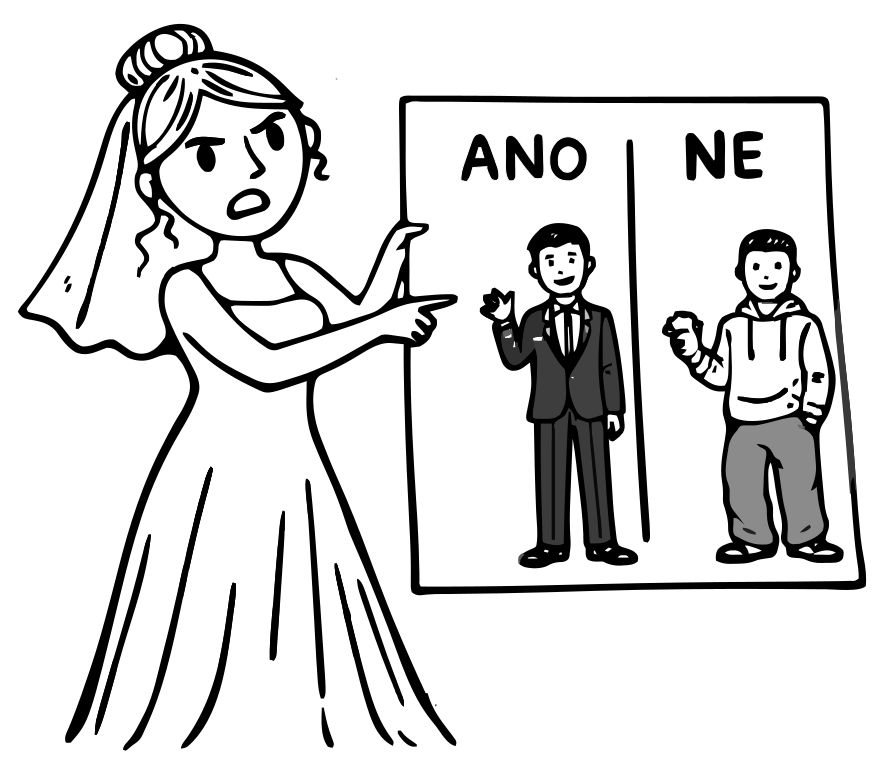
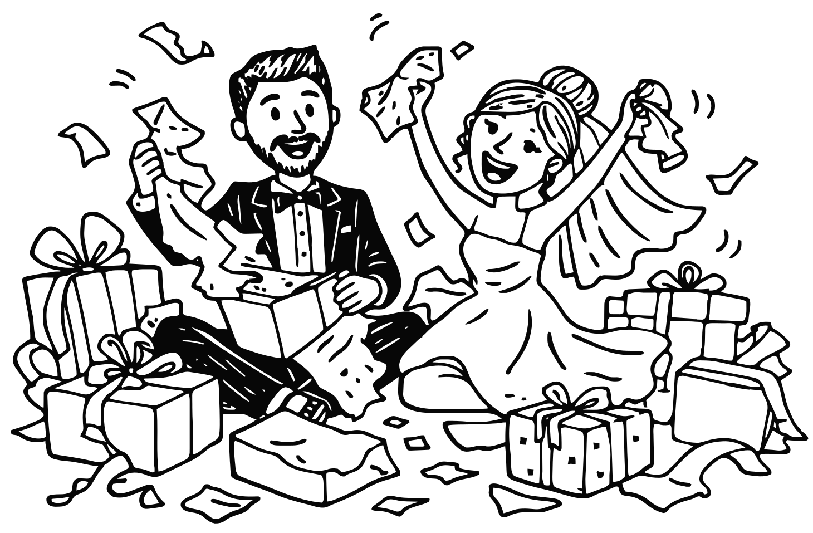
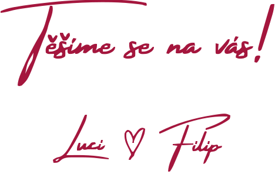

Po několika letech chození a pečlivém „průzkumu trhu“ na vašich svatbách jsme se rozhodli, že přestaneme jen pozorovat a zkusíme si to na vlastní kůži. Sejdeme se 1. srpna v Lukách u Doks, kde to celé společně oslavíme. Doufáme, že se těšíte alespoň tolik jako Filip a alespoň z poloviny tolik jako Lucka.
Budeme se brát!
Jak jsme se sem dostali?
Ze začátku jsme na to šli spíš opatrně, ale pak jsme to vzali zkratkou a po pár měsících spolu začali bydlet. Mezitím jsme stihli nasbírat spoustu zážitků – z cest i ze sportu. Některé byly povedenější než jiné, naštěstí naše láska je pevnější než naše kosti a vazy. Postupně jsme si oblíbili i chalupářský život – a právě tam došlo i k tomuto veledůležitému momentu. Filip si (zcela nenápadně) objednal celorepublikový blackout abychom si tento zážitek opravdu pamatovali a 4. července, ve chvíli, kdy to Lucka vůbec nečekala, vytáhl prstýnek a rázem byla ruka v rukávě.
Kam jet?
Svatba se koná ve vesnici Luka u Doks, kousek od Máchova jezera v severních Čechách. Z Prahy se sem dostanete zhruba za hodinu – podle toho, jak se domluvíte s dopravní situací. Z Jablonce nad Nisou je to asi 45 minut přes Českou Lípu, takže skoro za rohem. Z Olomouce počítejte s cestou kolem 3 hodin – ideálně přes Hradec Králové a Mladou Boleslav (svačinu s sebou). Parkování bude možné přímo před objektem.
Kde budete spát?
Ubytování bude trochu punkovější – v tom, co majitelé nazývají „glampingovou stodolou“. Přesně nevíme, co si pod tím představit, ale ve zkratce jde o velkou stodolu plnou glampingových stanů. Romantika zaručena… pokud vám nevadí sousedi. Pokud máte lehké spaní, doporučujeme špunty do uší. A pokud jste zvyklí spíš na soukromí a pětihvězdičkové hotely s vlastní koupelnou, doporučujeme poohlédnout se po ubytování v okolí.
Co musím vyplnit?
Víme, že vyplňování RSVP patří mezi věci, které člověk rád odkládá na „někdy potom“…ale zároveň taky víte, že my to potřebujeme vědět co nejdřív! Prosíme vás tedy, vyplňte formulář – jestli dorazíte, jestli budete spát, a případně pokud máte nějaké speciální požadavky. Zabere to jen chvilku a nám to výrazně zlepší spaní. Díky!
Co na sebe?

Žádnou paletku schválených barev nemáme, jen teda bílá už je obsazená. :) Architektky ovšem prosíme, aby tentokrát výjimečně zkusily i nějaké barvy – ano věříme, že i vy máte ve skříni něco jiného než černou, šedou a další odstíny černé! Pánové, u vás budeme rádi za oblekové kalhoty a košili, zbytek necháme na vás (věříme, že vaše drahé polovičky v případě průšvihu zakročí…)
Co nám dát?

Nějakou dobu už spolu žijeme, takže domácnost máme zařízenou a další mixér už bychom opravdu neměli kam dát. Upřímně – největší radost nám udělá obálka. Ideálně taková, která se dobře otevírá a ještě líp pamatuje! Rádi ji pak proměníme v další společné (bezúrazové) zážitky v rámci svatební cesty. A pokud byste přece jen chtěli přijít s něčím hmotným, budeme rádi za něco osobního od vás – něco, co si s vámi spojíme a neskončí zapomenuté někde v krabici.
